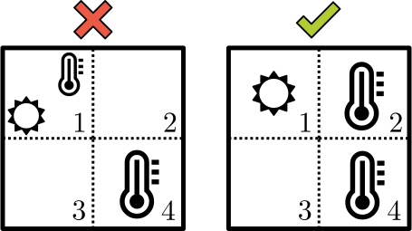

Observers
Control Engineering with Python
Symbols
| 🐍 | Code | 🔠| Worked Example |
| 📈 | Graph | 🧩 | Exercise |
| 🏷️ | Definition | 💻 | Numerical Method |
| 💠| Theorem | 🧮 | Analytical Method |
| 📠| Remark | 🧠| Theory |
| â„¹ï¸ | Information | 🗝️ | Hint |
| âš ï¸ | Warning | 🔓 | Solution |
🐍 Imports
🐍 Stream Plot Helper
🧠Observability
Motivation
Controling a system generally requires the knowledge of the state \(x(t)\), but measuring every state variable may be impossible (or too expensive).
Can we reduce the amount of physical sensors and still be able to compute the state with “virtual†or “software†sensors ?
🏷️ Observers
Control engineers call these software devices observers.
First we adress their mathematical feasibility.
🏷️ Observability
The system
\[ \left| \begin{array}{rcl} \dot{x} &=& f(x) \\ y &=& g(x) \end{array} \right. \]
is observable if the knowledge of \(y(t) = g(x(t))\) on some finite time span \([0, \tau]\) determines uniquely the initial condition \(x(0)\).
📠Remarks
The knowledge of \(x(0)\) determines uniquely \(x(t)\) via the system dynamics.
Later, observers will provide merely asymptotically exact estimates \(\hat{x}(t)\) of \(x(t)\), that satisfy \(\hat{x}(t) - x(t) \to 0\) when \(t \to +\infty.\)
Extension
The definition of observability may be extended to systems with (known) inputs \(u\):
\[ \left| \begin{array}{rcl} \dot{x} &=& f(x, u) \\ y &=& g(x, u) \end{array} \right. \]
In general, the input \(u\) may then be selected specifically to generate the appropriate \(y(t)\) that allows us to compute \(x(0)\).
But for linear systems, the choice of \(u\) is irrelevant.
Indeed, if
\[ \left| \begin{array}{rcl} \dot{x} &=& Ax + Bu \\ y &=& C x + D u \end{array} \right. \]
and we can deduce \(x(0)\) from \(y(t)\) when \(u=0\):
\[ y_0(t) = C e^{At} x(0) \; \to \; x(0) \]
then in the general case, when we measure
\[ y_u(t) = C e^{At} x(0) + (H \ast u)(t) \]
we can compute
\[ y_0(t) = y_u(t) - (H \ast u)(t) \]
and deduce \(x(0)\) at this stage.
🔠Observability / Car
The position \(x\) (in meters) of a car of mass \(m\) (in kg) on a straight road is governed by
\[ m \ddot{x} = u \]
where \(u\) the force (in Newtons) generated by its motor.
we don’t know where the car is at \(t=0\),
we don’t know what its initial speed is,
we do know that the car doesn’t accelerate (\(u=0\)).
If we measure the position \(y(t) = x(t)\):
\(x(0) = y(0)\) is known,
\(\dot{x}(0) = \dot{y}(0)\) is also computable.
Thus the system is observable.
🤔 What if?
What if we measure the speed instead of the location ?
\[ y(t) = \dot{x}(t) \]
The system dynamics \(m \ddot{x}(t) = u(t) = 0\) yields \(x(t) = x(0) + \dot{x}(0) t\) thus \[ \dot{x}(t) = \dot{x}(0) \] and any \(x(0)\) is consistent with a measure of a constant speed.
We can’t deduce the position of the car from the measure of its speed; the system is not observable.
💠Kalman Criterion
The system \(\dot{x} = Ax, \, y = C x\) is observable iff:
\[ \mathrm{rank} \, \left[ \begin{array}{c} C \\ CA \\ \vdots \\ C A^{n-1} \end{array} \right] = n \]
\([C; \dots; C A^{n-1}]\) is the Kalman observability matrix.
🏷️ Notation
“\(,\)†row concatenation of matrices.
“\(;\)†column concatenation of matrices.
We have
\[ [C; \cdots; C A^{n-1}]^t = [C^t, \cdots, (A^t)^{n-1}C^t]. \]
💠Duality
The system \(\dot{x} = A x, \; y = Cx\) is observable
\[\Longleftrightarrow\]
The system \(\dot{x} = A^t x + C^t u\) is controllable.
🧩 Fully Measured System
Consider
\[\dot{x} = A x, \; y = Cx\]
with \(x \in \mathbb{R}^n\), \(y \in\mathbb{R}^p\) and \(\mathrm{rank} \, C = n\).
1. 🧠🧮
Is the system observable ?
🔓 Fully Measured System
1. 🔓
Yes! The rank of its observability matrix \[ \left[ \begin{array}{c} C \\ CA \\ \vdots \\ C A^{n-1} \end{array} \right] \] is at most \(n\) and at least the rank of \(C\), which is also \(n\). Thus by the 💠Kalman Criterion, the system is observable.
🧩 Integrator Chain
\[\dot{x}_n = 0, \, \dot{x}_{n-1} = x_n, \, \cdots \,, \dot{x}_1 = x_2, \, y=x_1\]
1. 🧠🧮
Show that the system is observable.
🔓 Integrator Chain
1. 🔓
The standard form of the dynamics associated to the state \(x = (x_1, \dots, x_n)\) is characterized by
\[ A = \left[ \begin{array}{ccccc} 0 & 1 & 0 & \cdots &0 \\ 0 & 0 & 1 & \ddots & \vdots\\ \vdots & \ddots & \ddots & \ddots & 0 \\ \vdots & \ddots &\ddots & 0 & 1 \\ 0 & \cdots & \cdots & 0 & 0 \end{array} \right], \; C = \left[1, 0, 0, \dots, 0 \right] \]
Thus, \[ \begin{array}{rl} C &=& \left[1, 0, 0, \dots, 0 \right] \\ CA &=& \left[0, 1,0, \dots, 0 \right] \\ \vdots &=& \vdots \\ CA^{n-1} &=& \left[0, 0, 0, \dots, 1 \right] \end{array} \] The observability matrix has rank \(n\) and hence the system of observable.
🧩 Heat Equation

\(d T_1/dt = 0 + (T_2 - T_1)\)
\(d T_2/dt = (T_1 - T_2) + (T_3 - T_2)\)
\(d T_3/dt = (T_2 - T_3) + (T_4 - T_3)\)
\(d T_4/dt = (T_3 - T_4)\)
\(y = T_4\)
1. 🧠🧮
Show that the system is observable.
2. 🧮

Is it still true if the four cells are organized as a square and the temperature sensor is in any of the corners ?
3. 🧠🧮
Can you make the system observable with two (adequatly located) sensors?
🔓 Heat Equation
1. 🔓
The standard form of the dynamics associated to the state \(T = (T_1, T_2, T_3, T4)\) is characterized by
\[ A = \left[ \begin{array}{cccc} -1 & 1 & 0 & 0 \\ 1 & -2 & 1 & 0 \\ 0 & 1 & -2 & 1 \\ 0 & 0 & 1 & -1 \end{array} \right], \; C = \left[0, 0, 0, 1 \right] \]
Therefore the observability matrix is \[ \left[ \begin{array}{rrrr} 0 & 0 & 0 & 1 \\ 0 & 0 & 1 & -1 \\ 0 & 1 & -3 & 2 \\ 1 & -5 & 9 & 5 \end{array} \right] \] whose rank is 4: the system is observable.
2. 🔓
In the square configuration, there is no way to get observability with a single thermometer.

Indeed the new \(A\) matrix would be \[ A = \left[ \begin{array}{rrrr} -2 & 1 & 1 & 0 \\ 1 & -2 & 0 & 1 \\ -1 & 0 & -2 & 1 \\ 0 & 1 & 1 & -2 \end{array} \right] \]
and the new \(C\) matrix one of \[ \left[1, 0, 0, 0 \right], \; \left[0, 1, 0, 0 \right], \; \left[0, 0, 1, 0 \right], \; \left[0, 0, 0, 1 \right] \]
The corresponding observability matrices are
\[ \left[ \begin{array}{rrrr} 1 & 0 & 0 & 0 \\ -2 & 1 & 1 & 0 \\ 4 & -4 & -4 & 2 \\ 4 & -4 & -4 & 2 \end{array} \right], \; \left[ \begin{array}{rrrr} 0 & 1 & 0 & 0 \\ 1 & -2 & 0 & 1 \\ -4 & 6 & 2 & -4 \\ -4 & 6 & 2 & -4 \end{array} \right], \]
\[ \left[ \begin{array}{rrrr} 0 & 0 & 1 & 0 \\ -1 & 0 & -2 & 1 \\ 4 & 0 & 4 & -4 \\ 4 & 0 & 4 & -4 \end{array} \right], \; \left[ \begin{array}{rrrr} 0 & 0 & 0 & 1 \\ 0 & 1 & 1 & -2 \\ 0 & -4 & -4 & 6 \\ 0 & -4 & -4 & 6 \end{array} \right] \]
All the possible observability matrices in this case have rank 2 or 3 < 4.
3. 🔓
With 2 sensors, “it depends†(on the location of the sensors). For example:

The first case corresponds to
\[ C = \left[ \begin{array}{rrrr} 1 & 0 & 0 & 0 \\ 0 & 0 & 0 & 1 \end{array} \right] \]
the second one to
\[ C = \left[ \begin{array}{rrrr} 0 & 1 & 0 & 0 \\ 0 & 0 & 0 & 1 \end{array} \right] \]
The observability matrices are
\[ \left[ \begin{array}{rrrr} 1 & 0 & 0 & 0 \\ 0 & 0 & 0 & 1 \\ -2 & 1 & 1 & 0 \\ 0 & 1 & 1 & -2 \\ 4 & -4 & -4 & 2 \\ 0 & -4 & -4 & 6 \\ 4 & -4 & -4 & 2 \\ 0 & -4 & -4 & 6 \\ \end{array} \right], \; \left[ \begin{array}{rrrr} 0 & 1 & 0 & 0 \\ 0 & 0 & 0 & 1 \\ -1 & -2 & 0 & 1 \\ 0 & 1 & 1 & -2 \\ -4 & 6 & 2 & -4 \\ 0 & -4 & -4 & 6 \\ -4 & 6 & 2 & -4 \\ 0 & -4 & -4 & 6 \\ \end{array} \right] \]
The first has rank 3, the second rank 4.
🧠Observer Design
\[ \left| \begin{split} \dot{x} = A x + B u \\ y = C x + D u \end{split} \right. \]
State Observer (Version 1)
Simulate the system behavior
\[ \left| \begin{split} \frac{d\hat{x}}{dt} &= A \hat{x} + B u \\ \hat{y} &= C \hat{x} + D u \end{split} \right. \]
and since we don’t know better,
\[ \hat{x}(0) = 0. \]
Is \(\hat{x}(t)\) a good asymptotic estimate of \(x(t)\)?
🏷️ State Estimate Error
The dynamics of the state estimate error \(e = \hat{x} - x\) is
\[ \begin{split} \dot{e} & = \frac{d}{dt}(\hat{x} - x) \\ & = \frac{d\hat{x}}{dt} - \dot{x} \\ & = (A \hat{x} + Bu) - (A x + Bu) \\ & = A e \end{split} \]
💠State Estimator v1
⌠Failure
The state estimator error \(e(t)\), solution of
\[ \dot{e} = A e \]
doesn’t satisfy in general
\[ \lim_{t \to +\infty} e(t) = 0. \]
We have
\[ \lim_{t \to +\infty} e(t) = 0 \]
for every value of \(e(0) = \hat{x}(0) - x(0)\), if and only if \(\dot{x} = A x\) is asymptotically stable (i.e. the eigenvalues of \(A\) are in the open left-hand plane).
State Observer (Version 2)
Change the observer dynamics to account for differences between \(\hat{y}\) and \(y\) (both known values):
\[ \left| \begin{split} \frac{d\hat{x}}{dt} &= A \hat{x} + B u - L (\hat{y} - y)\\ \hat{y} &= C \hat{x} + D u \end{split} \right. \]
for some observer gain matrix \(L \in \mathbb{R}^{n \times p}\) (to be determined).

The new dynamics of \(e = \hat{x} - x\) is
\[ \begin{split} \dot{e} & = \frac{d}{dt}(\hat{x} - x) \\ & = \frac{d\hat{x}}{dt} - \dot{x} \\ & = (A \hat{x} + Bu - L(C \hat{x} - C x)) - (A x + Bu) \\ & = (A - LC) e \end{split} \]
📠Reminder
The system \(\dot{x} = A x, \; y = Cx\) is observable
\[\Longleftrightarrow\]
The system \(\dot{x} = A^t x + C^t u\) is commandable.
So what?
In this case, we can perform arbitrary pole assignment:
for any conjugate set \(\Lambda\) of eigenvalues,
there is a matrix \(K \in \mathbb{R}^{p \times n}\) such that
\[ \sigma(A^t - C^t K) = \Lambda \]
Since \(\sigma(M) = \sigma(M^t)\), for any square matrix \(M\),
\[ \begin{split} \sigma(A^t - C^t K) & = \sigma((A - K^tC)^t) \\ & = \sigma(A - K^t C) \\ \end{split} \]
Pole Assignment (Observers)
✔️ Success
Thus, if we set
\[ L = K^t \]
we have solved the pole assignment problem for observers:
\[ \sigma(A - L C) = \Lambda \]
🔠Pole Assignment
Consider the double integrator \(\ddot{y} = u\)
\[ \frac{d}{dt} \left[\begin{array}{c} x_1 \\ x_2 \end{array}\right] = \left[\begin{array}{cx} 0 & 1 \\ 0 & 0\end{array}\right] \left[\begin{array}{c} x_1 \\ x_2 \end{array}\right] + \left[\begin{array}{c} 0 \\ 1 \end{array}\right] u \]
\[ y = \left[ \begin{array}{cc} 1 & 0 \end{array} \right] \left[\begin{array}{c} x_1 \\ x_2 \end{array}\right] \]
(in standard form)
🐍 💻
\[ \frac{d}{dt} \left[\begin{array}{c} \hat{x}_1 \\ \hat{x}_2 \end{array}\right] = \left[\begin{array}{cx} 0 & 1 \\ 0 & 0\end{array}\right] \left[\begin{array}{c} \hat{x}_1 \\ \hat{x}_2 \end{array}\right] + \left[\begin{array}{c} 0 \\ 1 \end{array}\right] u - \left[\begin{array}{c} 3 \\2 \end{array}\right] (\hat{y} - y) \]
\[ \hat{y} = \left[ \begin{array}{cc} 1 & 0 \end{array} \right] \left[\begin{array}{c} \hat{x}_1 \\ \hat{x}_2 \end{array}\right] \]
🐍
🐍 💻
🐍 📈
🧠Kalman Filter
Setting
Consider \(\dot{x} = A x, \; y = Cx\) where:
the state \(x(t)\) is unknown (\(x(0)\) is unknown),
only (a noisy version of) \(y(t)\) is available.
We want a sensible estimation \(\hat{x}(t)\) of \(x(t)\).
We now assume the existence of state and output disturbances \(v(t)\) and \(w(t)\) (deviations from the exact dynamics)
\[ \left| \begin{split} \dot{x} &= A x + v \\ y &= C x + w \end{split} \right. \]
Thes disturbances (or “noises”) are unknown; we are searching for the estimate \(\hat{x}(t)\) of \(x(t)\) that requires the smallest deviation from the exact dynamics to explain the data.
For a known \(y(t)\), among all possible trajectories \(x(t)\) of the system, find the one that minimizes
\[ J = \int_0^{+\infty} v(t)^t Q v(t) + w(t)^t R w(t) \, dt \]
where:
\(Q \in \mathbb{R}^{n \times n}\) and \(R \in \mathbb{R}^{p\times p}\),
(to be continued …)
\(Q\) and \(R\) are symmetric (\(R^t = R\) and \(Q^t = Q\)),
\(Q\) and \(R\) are positive definite (denoted “\(>0\)”)
Heuristics
If it is known that there is a large state disturbance but small output disturbance, it makes sense to reduce the impact of the state disturbance in the composition of \(J\), hence to select a small \(Q\) wrt \(R\).
💠Optimal Solution
Assume that \(\dot{x} = A x, \; y = Cx\) is observable.
There is a state estimation \(\hat{x}(t)\), given for some \(L \in \mathbb{R}^{n \times p}\) as the solution of
\[ \left| \begin{split} d\hat{x}/dt &= A \hat{x} - L (\hat{y} - y)\\ \hat{y} &= C \hat{x} \end{split} \right. \]
The dynamics of the corresponding estimation error \(e(t) = \hat{x}(t) - x(t)\) is asymptotically stable.
💠Algebraic Riccati Equation
The gain matrix \(L\) is given by
\[ L = \Pi C^t R, \]
where \(\Pi \in \mathbb{R}^{n \times n}\) is the unique matrix such that \(\Pi^t = \Pi\), \(\Pi > 0\) and
\[ \Pi C^t R C \Pi - \Pi A^t - A \Pi - Q^{-1} = 0. \]
Optimal Control \(\leftrightarrow\) Filter
Solve the Ricatti equation for optimal control with
\[ (A, B, Q, R) = (A^t, C^t, Q^{-1}, R^{-1}) \]
then define
\[ L := \Pi C^t R \]
🔠Kalman Filter
Consider the system \[ \begin{split} \dot{x} &= v\\ y &= x + w \end{split} \]
If we believe that the state and output perturbation are of the same scale, we may try
\[ Q=[1.0], R=[1.0] \]
With \(\Pi = [\sigma]\), the filtering Ricatti equation becomes
\[ \sigma^2 - 2\sigma - 1 = 0 \]
whose only positive solution is
\[ \sigma = \frac{2 + \sqrt{(-2)^2 - 4\times 1 \times (-1)}}{2} = 1+\sqrt{2}. \]
With \(L = [\ell]\), we end up with
\[\ell = \sigma = 1 + \sqrt{2}.\]
Thus, the optimal filter is
\[ \begin{split} d\hat{x}/dt &= - (1+\sqrt{2})(\hat{y} - y)\\ \hat{y} &= \hat{x} \end{split} \]
🔠Kalman Filter
Consider the double integrator \(\ddot{x} = 0,\) \(y=x\).
\[ \frac{d}{dt} \left[\begin{array}{c} x \\ \dot{x} \end{array}\right] = \left[\begin{array}{cc} 0 & 1 \\ 0 & 0\end{array}\right] \left[\begin{array}{c} x \\ \dot{x} \end{array}\right] + \left[\begin{array}{c} v_1 \\ v_2 \end{array}\right], y = \left[\begin{array}{c} 1 & 0 \end{array} \right] \left[\begin{array}{c} x \\ \dot{x} \end{array}\right] + w \]
(in standard form)